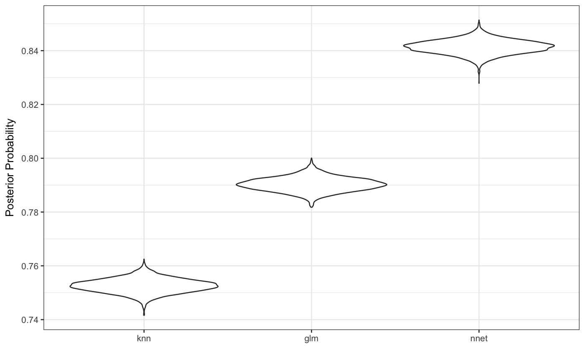

ggplot.posterior.RdA simple violin plot is created by the function.
# S3 method for posterior ggplot(data, mapping = NULL, ..., environment = NULL, reorder = TRUE)
| data | An object produced by |
|---|---|
| mapping, ..., environment | Not currently used. |
| reorder | A logical; should the |
A ggplot2::ggplot() object using
ggplot2::geom_violin() for the posteriors.
# Example objects from the "Getting Started" vignette at # https://topepo.github.io/tidyposterior/articles/Getting_Started.html file <- system.file("examples", "roc_model.RData", package = "tidyposterior") load(file) posterior_values <- tidy(roc_model) ggplot(posterior_values) + theme_bw()